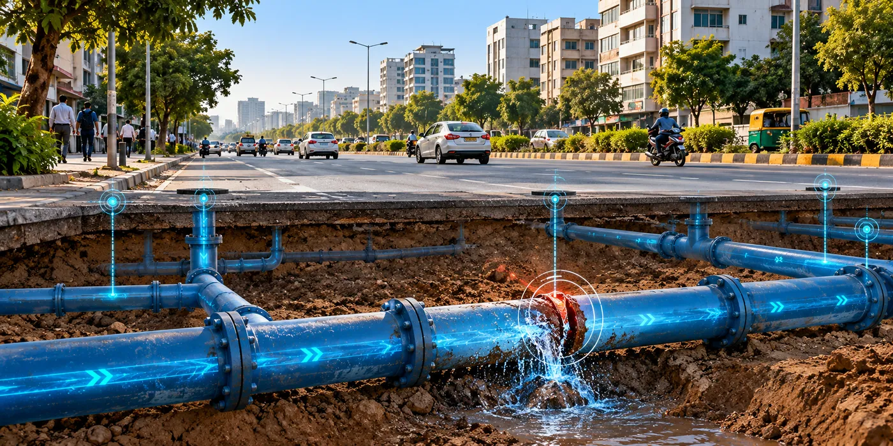

The Assignment
Urban water utilities across Smart City and AMRUT cities in Chhattisgarh, Uttar Pradesh, Odisha and Andhra Pradesh required support to assess and reduce Non-Revenue Water (NRW) within their water distribution systems.
The assignment involved understanding existing distribution networks, identifying water losses and developing a structured framework for improved monitoring and management of urban water supply infrastructure.
Our Approach
CS TECH Ai delivered integrated NRW assessment and water distribution management services, combining field surveys, GIS, hydraulic analysis and network monitoring.
The engagement included:
- Consumer and property surveys
- GIS mapping of water supply assets and distribution networks
- Water audits and NRW assessment
- Hydraulic modelling and analysis
- Creation and assessment of District Metered Areas (DMAs)
- Flow and pressure monitoring
- Leak detection and identification of water-loss areas
- Development of NRW reduction and network improvement measures
The approach enabled existing water distribution systems to be assessed spatially and hydraulically, supporting the identification of physical and commercial losses and the development of targeted interventions for improved network performance.